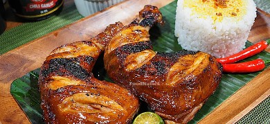

Chicken Inasal

Chicken Inasal is a popular Filipino grilled
chicken dish known for its distinct flavor and aroma.
It's usually marinated in a mixture of spices and herbs before grilling.
Here's a simple recipe for Chicken Inasal:
Ingredients:
For the marinade:
-
2 pounds (about 1 kg) chicken pieces (leg quarters or thighs work well)
- 1/2 cup lemongrass, chopped
- 1/4 cup vinegar (preferably cane vinegar)
-
3 tablespoons fish sauce (or soy sauce for a non-seafood alternative)
- 4 cloves garlic, minced
- 1 thumb-sized piece of ginger, minced
- 1 tablespoon brown sugar
- 1 teaspoon ground black pepper
- 1/2 teaspoon turmeric powder (for the vibrant color)
-
1/2 cup coconut or plain yogurt (optional, for added tenderness and
flavor)
- Bamboo skewers, soaked in water (if using wooden skewers)
For the basting sauce (optional):
-
1/4 cup annatto oil (atsuete oil) - you can make this by heating 1/4 cup
of vegetable oil with 2 tablespoons of annatto seeds until the oil turns
red, then strain the seeds.
- 1/4 cup melted butter or margarine
- Extra garlic powder and ground black pepper to taste
For serving:
- Steamed rice
-
Chicken oil (from the marinade or annatto oil) for drizzling over rice
- Atchara (Filipino pickled green papaya) or any side salad
Instructions:
-
In a large bowl, combine all the marinade ingredients: lemongrass,
calamansi juice, vinegar, fish sauce, minced garlic, minced ginger,
brown sugar, black pepper, turmeric powder, and optional yogurt. Mix
everything well.
-
Add the chicken pieces to the marinade and make sure they are coated
evenly. Cover the bowl with plastic wrap or a lid and marinate in the
refrigerator for at least 2 hours, or ideally, overnight to let the
flavors penetrate the chicken.
-
If using bamboo skewers, soak them in water for about 30 minutes to
prevent burning during grilling.
- Preheat your grill to medium-high heat.
-
Thread the marinated chicken onto the skewers. You can add some
lemongrass stalks for added flavor and presentation.
-
Optional: Prepare the basting sauce by combining the annatto oil, melted
butter, garlic powder, and black pepper in a small bowl.
-
Grill the chicken skewers for about 8-10 minutes on each side or until
fully cooked, basting with the basting sauce (if using) every now and
then. Make sure the chicken is cooked through, and the juices run clear
when pierced with a fork.
-
Once done, remove the chicken inasal from the grill and serve hot with
steamed rice, drizzled with chicken oil or annatto oil, and accompanied
by atchara or a side salad.
Enjoy your delicious and flavorful Chicken Inasal! It's perfect for
gatherings and a great way to introduce Filipino cuisine to friends and
family.
Return to main page